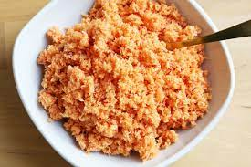

Ingredients
- 1 cup freshly grated coconut
- 1 red onion, finely chopped
- 2 green chilies, sliced
- 1 tablespoon lime juice
- 1 teaspoon chili flakes
- Salt to taste
Instructions
-
In a bowl, combine grated coconut, chopped red onion, green chilies,
and chili flakes.
- Add lime juice and salt. Mix well.
- Allow the sambal to sit for a while to let the flavors meld.
- Serve as a side dish with rice or flatbread.